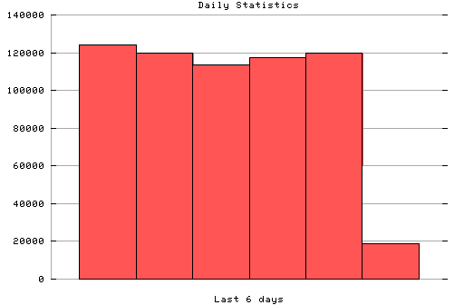

HTTP Server Daily Statistics
Covers: 10/09/95 to 10/14/95 (6 days).
All dates are in local time.
10/09/95 (Mon): 124009 : #############################################||### 10/10/95 (Tue): 119622 : #############################################||### 10/11/95 (Wed): 113372 : #############################################||### 10/12/95 (Thu): 117255 : #############################################||### 10/13/95 (Fri): 119975 : #############################################||### 10/14/95 (Sat): 18742 : #############################################||###

Statistics generated at Sat Oct 14 09:53:43 MET 1995, (C) Oslonett AS, 1995.